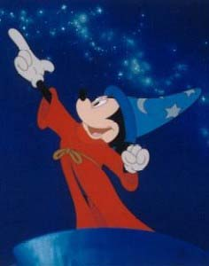

autohandler example
- From apprentice.perl.org:
<!DOCTYPE HTML PUBLIC "-//W3C//DTD HTML 4.01 Transitional//EN">
<html>
<head>
<meta http-equiv="Content-Type"
content="text/html; charset=utf-8">
<title><& SELF:title, %ARGS &></title>
<link rel="stylesheet"
href="<& /lib/url.mas,
path => '/apprentice.css' &>"
type="text/css">
</head>
<body bgcolor="#FFFFFF">
<table width="100%" cellspacing="3" cellpadding="0">
<tr valign="middle">
<td colspan="3" bgcolor="#CCCCCC" align="center">
<h1 class="headline">The Perl Apprenticeship Site</h1>
</td>
</tr>
<tr valign="top">
<td width="240">
<& left_side_menu.mas, %ARGS &>
<& latest_projects.mas &>
</td>
<td>
% $m->call_next;
</td>
</tr>
</table>
</body>
</html>
<%flags>
inherit => '/syshandler'
</%flags>
<%method title>
Perl Apprenticeship Site
</%method>